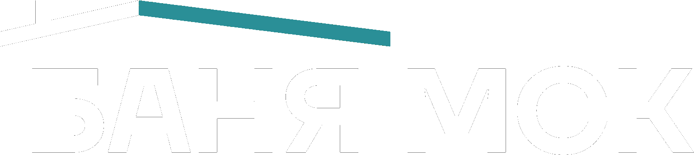

v2.19
База знаний
Knowledge Base
En
Ру
—
Пройдено:
0
% (
0
/
0
)
Completed:
0
% (
0
/
0
)
Главная
Home
Свернуть
Collapse
Выйти
Sign out
Загрузка…
База знаний продаж
Sales Knowledge Base
Выберите раздел для изучения
Choose a section to study
Главная
Home
En
v2.19
Вход для сотрудников
Employees only
База знаний
Knowledge Base
Обучение отдела продаж
Sales team training
Email
Email
Пароль
Password
Войти
Sign in